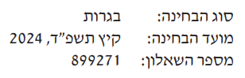
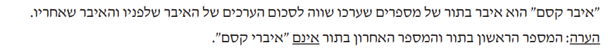
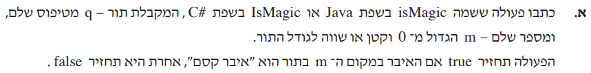
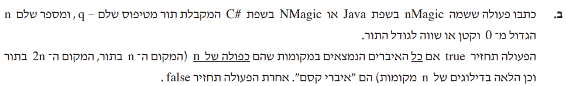

<meta charset="utf-8" />
<style> hint, drill {display: none;} </style>
<script src="../md-components.js"></script>

<import-hints from="./bagrut-hints.html"></import-hints>

<!---------------------------------------------------------->

<code-drills 
    heading="2024-271"
    log-level="W"
>
</code-drills>

<template>

<!---------------------------------------------------------->

<drill lang="java" id="2025-271" as-html>
<a href="./pdf/2024-271.pdf" target="_blank">
    
</a>
<a href="./pdf/2024-271.pdf" target="_blank" class="link link-primary ml-6">
    בגרות 2024
</a>
<a href="https://www.youtube.com/playlist?list=" target="_blank" class="link link-primary ml-6">
    פיתרונות של אריאל בר יתצחק
</a>
<video-list width=380 height=200 list="[
    ['https://youtu.be/', 'Q-1'],
]">
</video-list>
</drill>

<!---------------------------------------------------------->

<drill lang="java" id="length()">
-// <bdo dir="rtl">...פונקצית עזר... מה מקבלת ומה מחזירה</bdo>     {5}
public static int $length$(Queue&lt;Integer> q) {
        ~g ht its-a-helper      {5}
    Queue&lt;Integer> tmp = new Queue&lt;Integer>();
-    int count = 0;                 {1}
    while ($!$$q.isEmpty()$) {    {2}
            ^$
            ~r ht wrong-logic
+       int count = 0;              {1}
        tmp.insert(q.remove());
        count++;
    }
    while ($!$$tmp.isEmpty()$) {    {2}
            ^$
            ~r ht wrong-logic
        q.insert(tmp.remove());
    }
    return $count$;                 {1}!
        ~r ht var-is-not-defined
}

Runtime complexity is $`O(n)`$
    ^? ~g hr result
</drill>

<!---------------------------------------------------------->

<drill lang="java" id="atIndex()" no-wrong-phase>
-// <bdo dir="rtl">...פונקצית עזר... מה מקבלת ומה מחזירה</bdo>     {5}
public static int $atIndex$(Queue&lt;Integer> q, int indx) {
        ~g ht its-a-helper      {5}
    Queue&lt;Integer> tmp = new Queue&lt;Integer>();
    while (indx > 0) {
-        tmp.insert(q.remove());      {1}
-        indx--;                        {1}
+        $...$                          {1}
            ~o hr implement
    }
    int x = $q.remove();$
        ^... ~o hr implement            {2}
-   tmp.insert(x);                      {2}
+   $...$                               {2}
            ~o hr implement
    while ($!q.isEmpty()$) {
            ^... ~o hr implement        {3}
-       tmp.insert(q.remove());       {3}
+       $...$                           {3}
            ~o hr implement
    }
    while ($!tmp.isEmpty()$) {          {4}
            ^... ~o hr implement        {4}
-       q.insert(tmp.remove());       {4}
+       $...$                           {4}
            ~o hr implement
    }
    return x;
}

// Runtime complexity of atIndex() is $`O(n)`$
    ^? ~g hr result
</drill>

<!---------------------------------------------------------->

<drill lang="java" id="isMagic()">
$!html 
$!html <br>
public static $boolean $$isMagic$(Queue&lt;Integer> q, int m) {
        ^$
        ~r ht missing-ret-type
    if ($m == 1 || m == length(q)$) {
            ^... ~o ht implement
        return false;
    }

-   // לפי השאלה המיקומים בתור מתחילים באחד      {1}
    int l = atIndex(q, m$-2$);      {1}
        ^-1 ~r hr wrong-logic
    int x = atIndex(q, $m$$-1$);    {1}
        ~r hr wrong-logic
        ^$ ~r hr wrong-logic
    int r = atIndex(q, m$$);        {1}
        ^+1

    return x == l + r;
}
</drill>

<!---------------------------------------------------------->

<drill lang="java" id="nMagic()">
$!html 
$!html <br>
$public static $boolean $nMagic$($Queue$$&lt;Integer>$ q, int n) {
        ^$
        ~r ht external-func
        ~r ht generic-type  {+}
        ^$
    while (n $<=$ length(q)) {
            ^< ~r ht wrong-logic
        if ($!$isMagic(q, n)) {         {1}
                ^$
            return $false$;             {1}
                ^true ~r hr wrong-logic
        }
        n += n;
    }
    return $true$;                      {1}
        ^false ~r hr wrong-logic
}
</drill>

<!---------------------------------------------------------->

<drill lang="java" id="">
</drill>

<!---------------------------------------------------------->

<drill lang="java" id="">
</drill>

</template>